Как получить и обработать сырые данные из Яндекс.Метрики
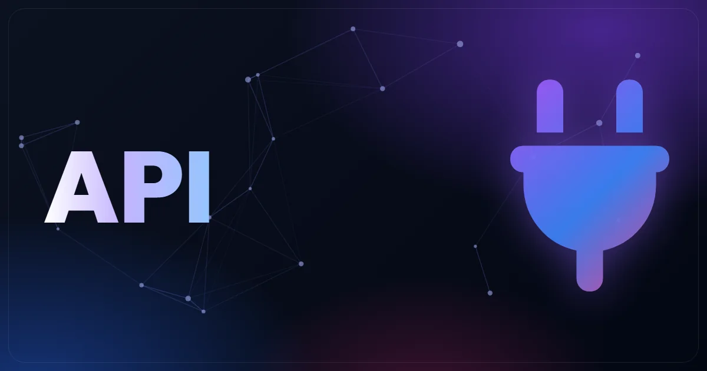
Хотите качественно анализировать статистику из Яндекс. Метрики? Отследить сложные воронки продаж, объединить данные из разных систем аналитики, контролировать расхождения в статистике, — «сырые» данные помогут вам эффективно решить все эти сложные задачи.
В 2016 году Яндекс заявили о публичном релизе программного интерфейса Logs API, который позволяет получить сырые данные из Яндекс. Метрики в файле формата TSV.
Однако в работе с API Яндекс. Метрики у вас могут возникнуть сложности:
- процедуру выгрузки придется повторять каждый раз, когда вы захотите получить новую статистику;
- для визуализации данных нужно вручную загружать TSV-файл в оболочку, предназначенную для построения графиков и таблиц.
В этой статье я расскажу, как автоматизировать выгрузку сырых данных из Яндекс. Метрики и работать с полученной статистикой.
Как выгрузить сырые данные с помощью языка R?
Язык R был специально разработан для применения в таких областях, как разведочный анализ данных, классические статистические тесты и высокоуровневая графика.
Для выгрузки данных из Яндекс. Метрики я создал программный пакет ryandexdirect, в который добавил функцию yadirGetLogsData — она упрощает работу с Logs API.
Опишу работу с пакетом поэтапно:
- Скачайте, установите и запустите версию R, соответствующую операционной системе вашего компьютера.
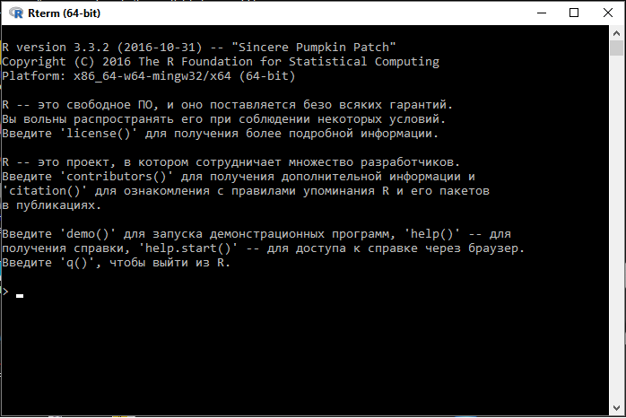
- Скопируйте код пакета ryandexdirect в консоль R:
if(!"bitops" %in% installed.packages()[,1]){install.packages("bitops")}
if(!"devtools" %in% installed.packages()[,1]){install.packages("devtools")}
library(devtools)
install_github('selesnow/ryandexdirect')
library(ryandexdirect)
Появится сообщение, которое подтвердит успешную установку пакета.
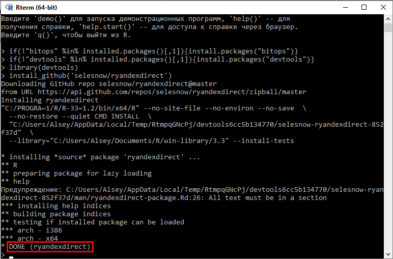
- Далее необходимо получить токен доступа к API. Для этого в консоль R скопируйте следующий код:
my_token <- yadirGetToken()
В открывшемся окне браузера разрешите приложению «ryandexdirect» доступ к своему аккаунту.
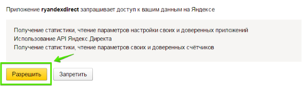
- Появится окно с кодом доступа к API: скопируйте его и вставьте в R-консоль после строки «Enter your token». Рекомендую также сохранить этот код в блокноте, потому что он еще понадобится вам для выгрузки данных в Power BI.
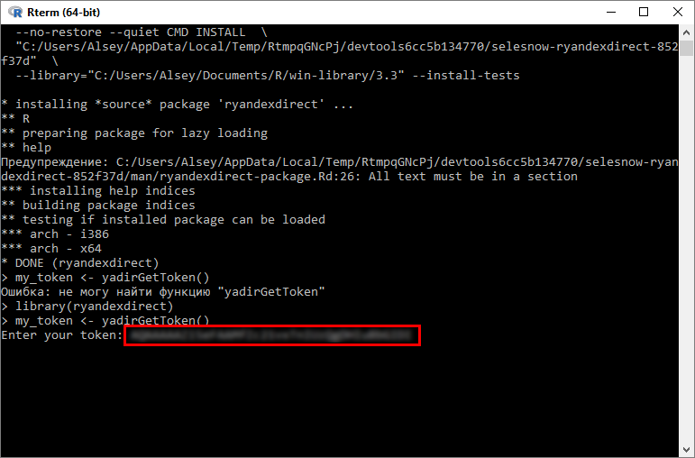
- В работе с функцией yadirGetLogsData используются такие аргументы:
- counter — номер счётчика Яндекс. Метрики;
- date_from — начальная дата отчёта;
- date_to — конечная дата отчёта;
- fields — список полей, которые вы хотите получить;
- source — источник записей (возможные значения для этого аргумента: «hits» — просмотры или «visits» — визиты);
- token — API токен (ключ доступа к Logs API).
Смотрите в справке список доступных полей для источника записей «visits» и «hits».
Подставьте ваши значения аргументов и запустите код ниже в консоли R:
rawmetrikdata <- yadirGetLogsData(counter = "00000",
date_from = "2016-12-01",
date_to = "2016-12-20",
fields = "ym:s:visitID,ym:s:date,ym:s:bounce,ym:s:clientID,ym:s:lastTrafficSource,ym:s:lastAdvEngine,ym:s:regionCity",
source = "visits",
token = my_token)
- Появится сообщение об успешной загрузке данных:
Processing .......... processing time 53.22 sec
Loading .. done! loading time 0.33 sec
Information:
Request id: 6079
Request status: cleaned_by_user
Total time: 54.11 sec
Data size: 0.13 Mb
Return rows: 1649
Data load successful!
В сообщении можно увидеть:
- время обработки запроса на сервере Яндекса (53 секунды);
- время загрузки данных с сервера (0,33 секунды);
- общее время процедуры (54 секунды);
- размер обработанных данных (0.13 мегабайт);
- количество вернувшихся строк (1649).
Как выгрузить данные из R в таблицу или базу данных?
1. В CSV-таблицу
Если вы предпочитаете работать со статистикой в редакторе таблиц, например Excel, выгрузите полученные данные в CSV-файл. Для этого вставьте и запустите код в R-консоли:
write.table(rawmetrikdata, "rawdata.csv", sep = ";", dec = ",", row.names = FALSE)
В рабочей директории появится файл «rawdata.csv» с нужными данными. Чтобы узнать расположение рабочей директории, запустите в консоли R этот код:
getwd()
2. В базу данных MySQL
Рассмотрим, как импортировать статистику в базу данных на примере популярной СУБД MySQL.
В представленном коде подставьте значения вашей базы данных в значения параметров «dbname», «user» «password»,«host» (указаны после знака «=»).
if(!"RMySQL" %in% installed.packages()[,1]){install.packages("RMySQL")} library(RMySQL)
conMySQL <- dbConnect(MySQL(), dbname = "MySchema", user = "root", password = "password", host = "localhost")
dbWriteTable(conMySQL, "raw_data", rawmetrikdata, row.names = FALSE, append = TRUE)
dbDisconnect(conMySQL)
Запустите код со своими значениями в консоли R.
Как импортировать сырые данные в Microsoft Power BI?
Если ваших навыков работы в среде R недостаточно, чтобы визуализировать полученные данные, используйте Power BI —мощный бесплатный инструмент от Microsoft.
Рассмотрим два способа импорта данных:
- с помощью сценария на языке R;
- с помощью специального файла Power BI с коннектором к Яндекс. Метрике.
1. С помощью сценария на языке R
1.1. В Power BI на вкладке «Главная» выберите группу меню «Получить данные» — «Другое» — «R-скрипт». Нажмите кнопку «Подключить».
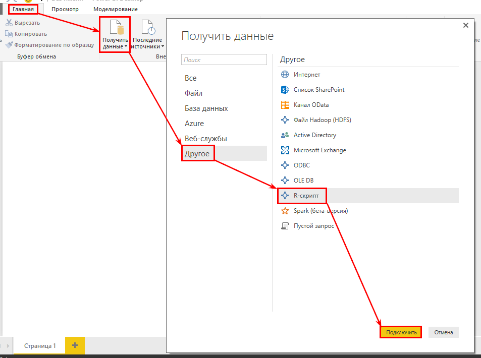
1.2. Укажите ваши значения в аргументах функции:
library(ryandexdirect)
rawmetrikdata <- yadirGetLogsData(counter = "00000",
date_from = "2016-12-01",
date_to = "2016-12-20",
fields = "ym:s:visitID,ym:s:date,ym:s:bounce,ym:s:clientID,ym:s:lastTrafficSource,ym:s:lastAdvEngine,ym:s:regionCity",
source = "visits",
token = my_token)
Вместо «my_token» нужно вставить значение вашего токена API.
В открывшемся окне вставьте код в поле «Выполните сценарий R».
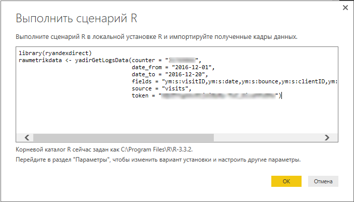
1.3. В окне «Навигатор» поставьте галочку напротив таблицы «rawmetrikdata» и нажмите кнопку «Загрузить»:
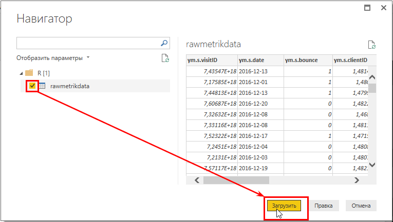
1.4. Данные, загруженные в вашу модель, будут выглядеть следующим образом:
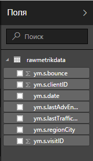
2. С помощью файла Power BI с коннектором к Яндекс. Метрике
Этот метод еще проще — вам не нужно изменять код, достаточно ввести пользовательские параметры в коннектор.
2.1. Скачайте файл Power BI.
2.2. На вкладке «Главная» выберите группу меню «Внешние данные», откройте выпадающий список «Изменить запросы» и кликните на поле «Изменить параметры».
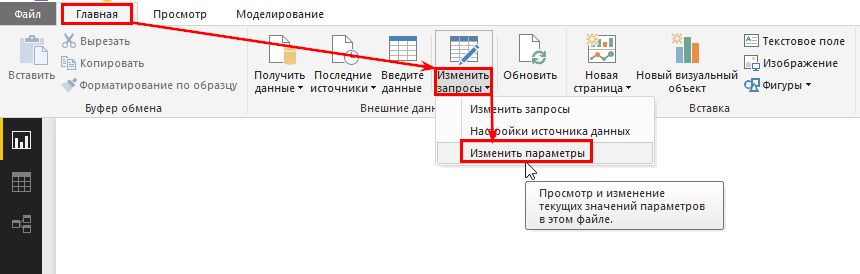
2.3. Введите свои параметры и нажмите кнопку «ОК».
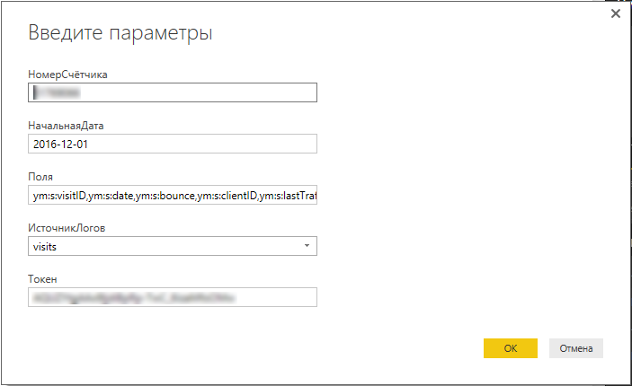
2.4. Появится сообщение, что в запросах есть ожидающие изменения — нажмите «Применить изменения».
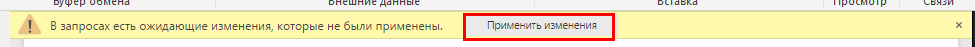
2.5. В диалоговом окне «Собственный запрос к базе данных» кликните «Выполнить».
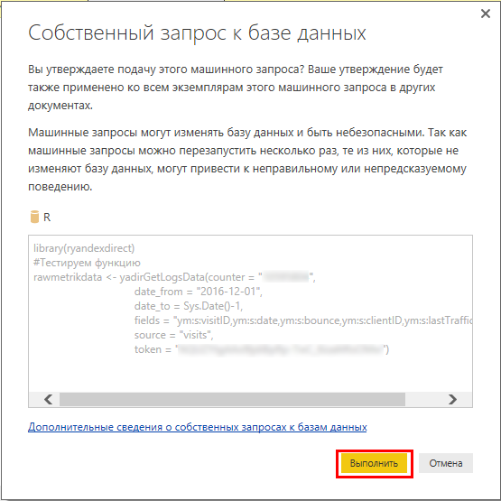
В Power BI загрузятся данные из указанного вами аккаунта Яндекс. Метрики.
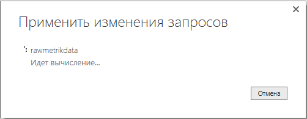
Выводы
Сырые данные из Яндекс. Метрики — отличный источник информации для аналитических исследований, однако без навыков программирования работать с API сложно. Используя описанный в статье метод, вы сможете легко выгрузить статистику и обработать данные.
Алгоритм действий:
- Установите версию R, соответствующую операционной системе на вашем компьютере, и загрузите данные с помощью пакета ryandexdirect.
- С помощью R-консоли выгрузите сырые данные в удобную для вас среду: - файл формата CSV; - базу данных MySQL.
- Настройте импорт статистики в Microsoft Power BI для дальнейшей визуализации данных.
В следующей статье я расскажу, как связать Яндекс. Директ с Power BI.